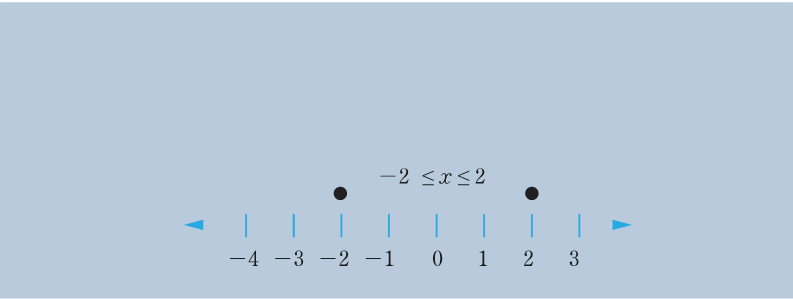
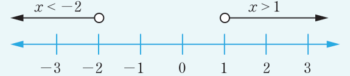

Combining the two inequalities gives,
Therefore, the solution of the inequality is represented on the following number line.

Example 5.45
Find the solution of and represent it on a number line.
Solution
Given . It follows that, .
Thus, either or .
or
or
or
Therefore, the solution of the inequality is or .
The representation of this solution is shown on the following number line.

Example 5.46
Find the values of real numbers which satisfy the inequality .
Solution
Given implies that the inequality is valid if and only if because the square root of a negative number is not real. Thus, it follows that,